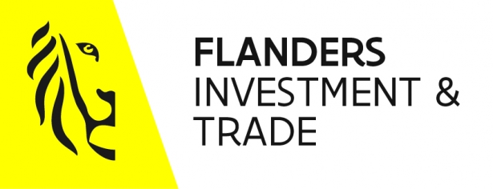

Bezochte bedrijven

Flanders Investment & Trade
Flanders Investment & Trade is een externe verzelfstandigd agentschap die ondernemingen helpen om naar de United States uit te breiden. Soms helpen ze ook ondernemingen die vanuit de United States naar Vlaanderen willen uitbreiden.
Belgium chamber of commerce
Belcham is een organisatie die bedrijven help om hun markt uit te breiden naar de VS. Zij hebben overal connecties in de vs die een bedrijf kan gebruiken als zij vanuit belgie naar de vs wilt uitbreiden. Ook hebben zij al een goed beeld over de verschillende markten in de vs.

DataCamp
DataCamp is een IT-bedrijf dat opgericht is met het idee om zoveel mogelijk mensen de kans
te geven om zich te ontwikkelen tot programmeur of data analist. Ze hebben hiervoor een
website ontwikkeld dat dient als leerplatform waar mensen verschillende programmeertalen
kunnen leren.
Ook kunnen leraren lessen op dit platform zetten, hierdoor heeft de website
steeds nieuwe content.